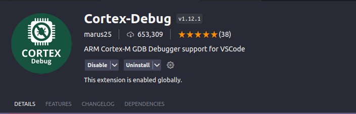
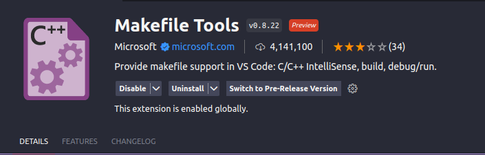
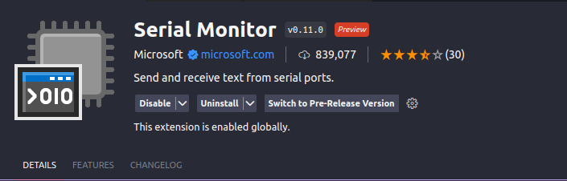
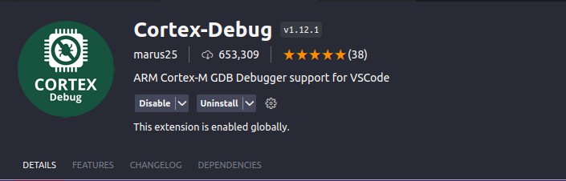
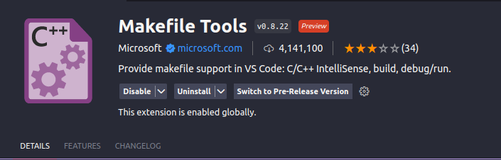
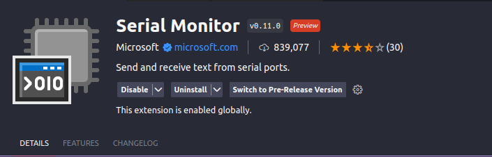

DEBUG
1.Cài đặt compiler cho stm32
sudo apt-get install git build-essential gcc-arm-none-eabi libtool libusb-1.0.0 libusb-1.0-0-dev gdb-multiarch
2.Cài đặt openOCD
sudo apt-get update
sudo apt-get upgrade
git clone https://github.com/openocd-org/openocd.git
cd openocd
./bootstrap
./configure --prefix=/usr/local/ --enable-ftdi --enable-stlink
sudo make install
3.Cài các extension
 





4.Cài St-link
sudo apt install stlink-tools
Cắm St-link vào máy và kiểm tra theo lệnh và cho ra như hình bên dưới là thành công
st-info --probe
5.Tạo folder .vscode để debug
Tạo file setting.json trong folder với nội dung sau, sửa ryan theo user trên máy của mình.
{
"terminal.integrated.env.windows":
{
"PATH": "/home/ryan/zephyrproject/zephyr/scripts;${env:PATH}",
"ZEPHYR_BASE": "/home/ryan/zephyrprojec/zephyr"
}
}
Tạo file launch.json trong folder với nội dung sau, sửa ryan theo user trên máy của mình.
{
"version": "0.2.0",
"configurations":
[
{
"gdbPath": "/home/ryan/zephyr-sdk-0.16.4/arm-zephyr-eabi/bin/arm-zephyr-eabi-gdb",
"cwd": "${workspaceRoot}",
"executable": "${workspaceFolder}/build/zephyr/zephyr.elf",
"name": "Debug with OpenOCD",
"request": "launch",
"type": "cortex-debug",
"servertype": "openocd",
"configFiles": ["/home/ryan/zephyrproject/zephyr/boards/arm/stm32_min_dev/support/openocd.cfg"],
"searchDir": [],
"runToEntryPoint": "main",
"showDevDebugOutput": "none"
},
]
}
Ghi chú
Nếu sử dụng board khác stm32_min_dev thì vào thư mục support của board đó và copy đường dẫn openocd.cfg thay vào configFiles ở trên.